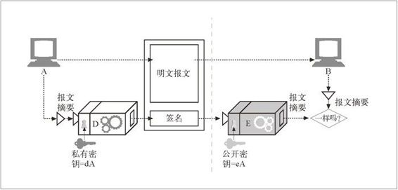

14.5 数字签名
到目前为止，我们已经讨论了各种使用对称和非对称密钥加 / 解密保密报文的密钥加密技术。
除了加 / 解密报文之外，还可以用加密系统对报文进行签名（sign），以说明是谁编写的报文，同时证明报文未被篡改过。这种技术被称为数字签名（digital signing），对下一节将要讨论的因特网安全证书系统来说非常重要。
签名是加了密的校验和
数字签名是附加在报文上的特殊加密校验码。使用数字签名有以下两个好处。
签名可以证明是作者编写了这条报文。只有作者才会有最机密的私有密钥，1 因此，只有作者才能计算出这些校验和。校验和就像来自作者的个人“签名”一样。
1 此时假定私有密钥没有被人偷走。大多数私有密钥都会在一段时间后过期。还有一些“取消列表”记录了被偷走或入侵的密钥。
签名可以防止报文被篡改。如果有恶意攻击者在报文传输过程中对其进行了修改，校验和就不再匹配了。由于校验和只有作者保密的私有密钥才能产生，所以攻击者无法为篡改了的报文伪造出正确的校验码。
数字签名通常是用非对称公开密钥技术产生的。因为只有所有者才知道其私有密钥，所以可以将作者的私有密钥当作一种“指纹”使用。
图 14-10 显示了一个例子，说明了节点 A 是如何向节点 B 发送一条报文，并对其进行签名的。

图 14-10 解密的数字签名
节点 A 将变长报文提取为定长的摘要。
节点 A 对摘要应用了一个“签名”函数，这个函数会将用户的私有密钥作为参数。因为只有用户才知道私有密钥，所以正确的签名函数会说明签名者就是其所有者。在图 14-10 中，由于解码函数 D 中包含了用户的私有密钥，所以我们将其作为签 名函数使用。2
2 RSA 加密系统将解码函数 D 作为签名函数使用，是因为 D 已经将私有密钥作为输入使用了。注意，解码函数只是一个函数，因此，可以将其用于任意的输入。同样，在 RSA 加密系统中，以任意顺序应用 D 和 E 函数时，两者都会相互抵消。因此 E(D(stuff)) = stuff，就像 D(E(stuff)) = stuff 一样。
一旦计算出签名，节点 A 就将其附加在报文的末尾，并将报文和签名都发送给 B。
在接收端，如果节点 B 需要确定报文确实是节点 A 写的，而且没有被篡改过，节点 B 就可以对签名进行检查。节点 B 接收经私有密钥扰码的签名，并应用了使用公开密钥的反函数。如果拆包后的摘要与节点 B 自己的摘要版本不匹配，要么就是报文在传输过程中被篡改了，要么就是发送端没有节点 A 的私有密钥（也就是说它不是节点 A）。